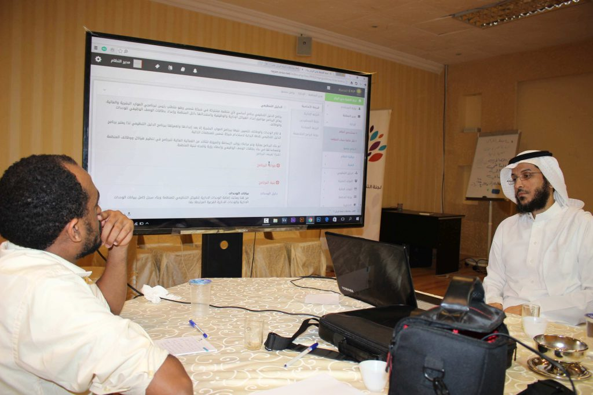
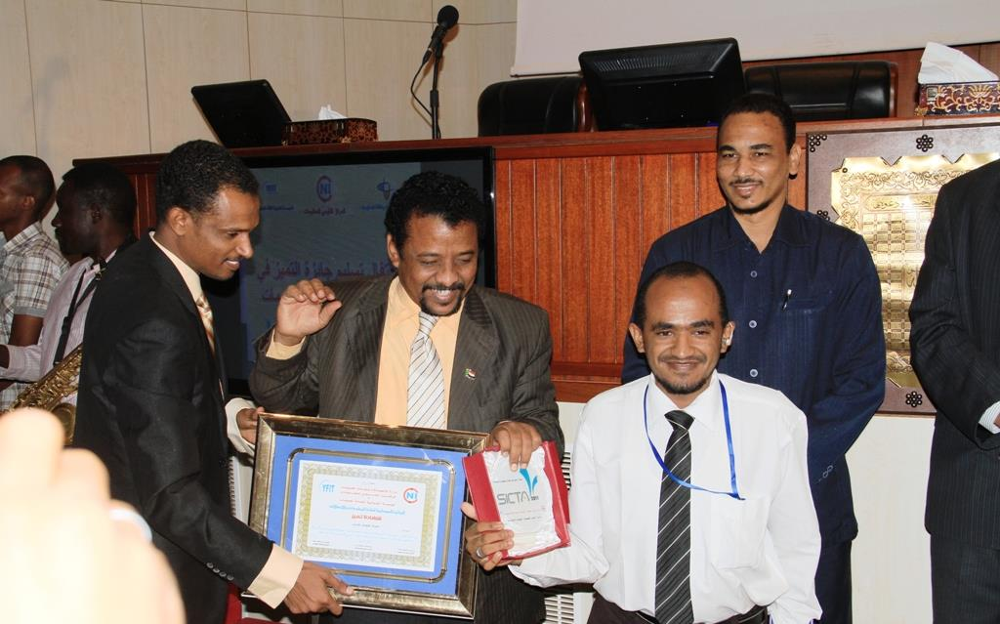
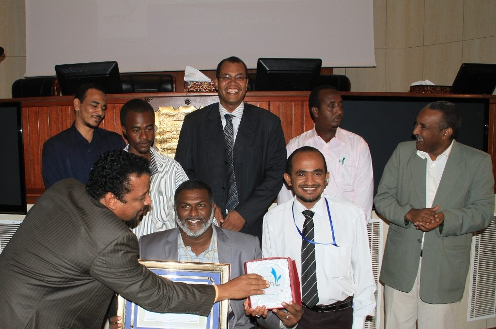
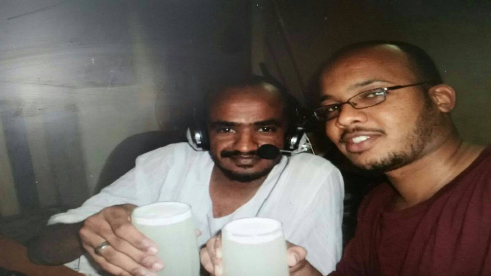
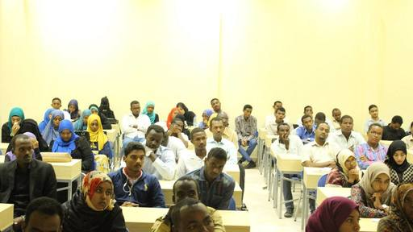
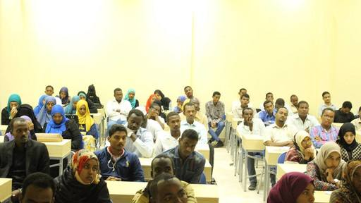
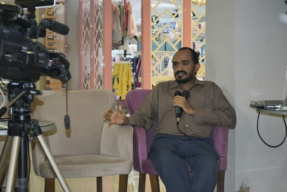
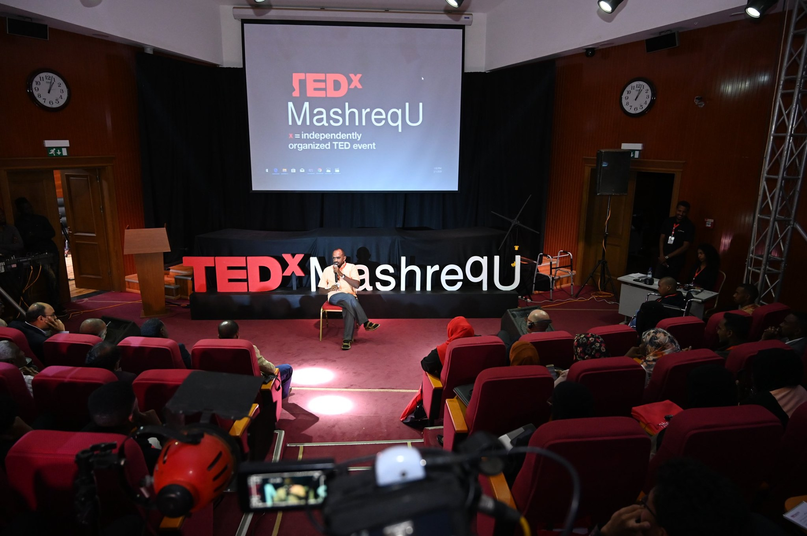
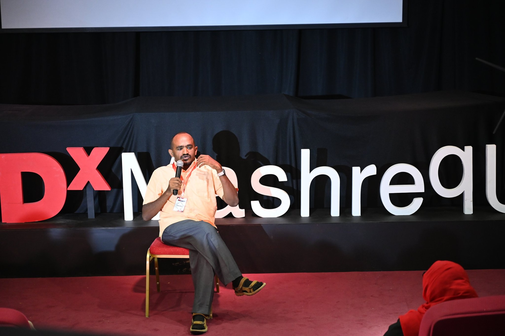

مرحباً، أبوبكر الطائف، مبرمج ومطور أنظمة وقواعد بيانات، مهتم بريادة الأعمال، أتمتع بخلفية قوية في مجالات العمل المرتبطة بالبرمجة، مناقش جيد ومتحدث، جميل الصياغة والتواصل، محب للثقافة والتنوع والرحلات.
- 2020
-
CEO
مؤسسة باتنجان للتغذية المدرسية
1/2019 - حتى الآن
- 2019
-
مدير تقنية المعلومات
شركة شمس الإدارة - المملكة العربية السعودية
1/2018 - 12/2018
-
رئيس فريق المبرمجين
شركة شمس الإدارة
9/2014-12/2017
-
مدير تقنية المعلومات
مؤسسة عزم لعلوم الحاسوب
فرع شركة شمس الإدارة بالسودان
4/2017 - 12/2018
-
مستشار الأعمال وتقنية المعلومات
مؤسسة كاشتا لخدمات التوظيف عن بعد
5/2018 - حتى الآن
- 2014
-
مبرمج
شركة دان تكنولوجي - المملكة العربية السعودية
12/2013 - 8/2014
-
مبرمج
شركة سكر النيل الأبيض
4/2012 - 11/2013
-
مدير إدارة الإحصاء والمعلومات
المجلس القومي للتدريب
1/2012 - 3/2012
-
مدير مشروع نظام قاعدة بيانات التدريب
المجلس القومي للتدريب
9/2010 - 12/2011
- 2009
-
مبرمج
كلية البيان للعلوم والتكنولوجيا
4/2009-8/2010
-
منسق برامج التدريب التقنية
مركز الخرطوم الدولي للتدريب
1/2009 - 3/2009
-
مبرمج
منظمة أبرار لرعاية معاقي الحرب ومكافحة الألغام
01/2007 - 3/2012
- 2008
- كلية العلوم الرياضية - جامعة الخرطوم
شركة شمس الإدارة » 2019-2014م
نظام سنسو يمثل نظام إدارة موارد مبتكر يقدم خدمة إدارة الموارد بصورة مبسطه ومرنه وسهلة التهيئة والإستخدام، يضم النظام مجموعة من البرامج التي تم تصميمها بعناية لتلائم قطاعات عريضه من مؤسسات الأعمال.
دوري في المشروع
شغلت عدة مهام في المشروع : مبرمج، مصمم، محلل، فاحص، تأسيس فريق العمل، تدريب فريق العمل، خدمة العملاء، التسويق.
موقع الشركة منصة المعرفةالمجلس القومي للتدريب » 2013-2011
يهدف المشروع لحوسبة كامل قطاع التدريب في السودان في منصة إلكترونية متكاملة.
يشتمل المشروع على المكونات التالية :
- قاعدة بيانات موظفي الخدمة العامة
- قاعدة بيانات الخطة القومية للتدريب
- قاعدة بيانات مراكز التدريب العامة والخاصة
- نظام تقييم وقياس أثر التدريب
حقق المشروع نجاح كبير في حينها بضمه لعمليات 137 وحدة تدريب إتحادية و 17 وحدة ولائية و 244 مركز تدريب، وتم إستخدامه من قبل 23880 موظف خدمة عامة.
حصل المشروع على جائزة أفضل مشروع حكومة إلكترونية للعام 2012م المقدمة من المؤسسة الشبابية لتقنية المعلومات.
دوري في المشروع
مؤسس الإطار النظري للمشروع وبناء نسخة المشروع الأولى ومن ثم تأسيس فريق العمل وإدارته.
منظمة أبرار لرعاية معاقي الحرب ومكافحة الألغام » 2012-2007م
مشروع قاعدة بيانات شاملة لفئات الإعاقة المختلفة من خلال إستمارة بيانات محكّمة.
المشروع جزء من تطوير مركز تقنية المعلومات بمنظمة أبرار لرعاية معاقي الحرب ومكافحة الألغام بتمويل من الـ UNDP.
دوري في المشروع
المشاركة في تحكيم إستمارة البيانات وبناء نسخة النظام الأولى وتأسيس فريق العمل وإدارته.
مشروع الأحواض المائية - مكون السودان » 2012م
المراقبة والتقييم (M&E) أو ما يعرف أيضا بالرصد والتقييم هي العملية التي تهدف إلى تحسين الإدارة الحالية والمستقبلية للمخرجات والنتائج والأثر وتساعد على تحسين الأداء وتحقيق النتائج. وتستخدم أساسا لتقييم أداء المشاريع والمؤسسات والبرامج التي تضعها الحكومات والمنظمات الدولية و المنظمات غير الحكومية. كما أنها تربط الخطط والأداء بالنتئج المستقبلية
مشروع الأحواض المائية هو مشروع بتمويل من البنك الدولي وبإشراف ال UNDP، يشمل المشروع أثيوبيا ومصر والسودان
دوري في المشروع
تحليل الإحتياجات ومناقشتها مع فريق خبراء المشروع وبرمجة وبناء النظام وإختباره تجاه المعطيات لحين تسليمه.
شركة دان لنظم قواعد البيانات » 2013-2011م
تقوم فكرة المشروع على الربط بين عناصر سوق الدواء في السودان : شركات الأدوية، الصيدليات، الصيادلة، المرضى.
حقق المشروع إنتشار كبير بين الصيدليات وصل إلى 521 صيدلية في 20 مدينة في السودان.
لم يستمر المشروع نسبة لإحجام شركات الأدوية غير المرخصة في إستخدام النظام، رغم طلب الصيدليات العالي.
دوري في المشروع
مؤسس المشروع مع آخرون، مبرمج، ومسوق.
كلية البيان للعلوم والتكنولوجيا » 2011-2009م
نظام لقياس الأداء بصورة مستمرة بالنسبة لتدريس الكورسات بالكلية.
دوري في المشروع
تحليل الإحتياجات ومناقشتها مع مركز الحاسوب بالكلية وبرمجة النظام وإختباره وتشغيله الفعلي.
مشروع خاص » 2018م
منصة أبحاث متكاملة، تربط بين الباحث والمشرف، يستطيع من خلالها الباحث تحرير البحث وإضافة متعاونين.
تشتمل المنصة بجانب خدمة تحرير البحث ومشاركته لخدمات الترجمة والتحليل الإحصائي والتدقيق اللغوي
تم بيع المنصة لشركة سعودية
مصنع سكر النيل الأبيض » 2013-2012م
نظام الحصاد مهتم بحوسبة بيانات وإجراءات العمليات الزراعية والفلاحية المختلفة لمزارع قصب السكر التابعة للمصنع لحين وصولها كمادة خام إلى المصنع للتصنيع.
دوري في المشروع
تحليل الإحتياجات ومناقشتها مع مهندسوا الزراعة وبرمجتها وإختبار النتائج إلى أن تم تشغيل المشروع بصورة فعلية في المصنع.
مصنع سكر النيل الأبيض » 2013-2012م
نظام المراقبة الداخلية مهتم بالإجراءات المتعلقة بالتشغيل وتحليل المخاطر وبناء خريطة حرارية لها.
دوري في المشروع
تحليل الإحتياجات ومناقشتها مع مراقبي قسم التشغيل وبرمجتها وإختبار النتائج إلى أن تم تشغيل المشروع بصورة فعلية في المصنع.
الخبرات والمهارات التقنية
الخبرات المجاورة
من خلال المشاركة الفعّالة في بناء مجموعة أنظمة متعلقة بالموارد البشرية ومن خلال العمل عدة مرات كمدير تنفيذي أو مدير فريق عمل أكتسبت معرفة وخبرة جيدة في مجال الموارد البشرية تشتمل على عمليات بناء الهياكل الوظيفية والإدارية وبطاقات الوصف الوظيفي ومعاملات وإجراءات التعيين، بالإضافة إلى منظومة إعداد الرواتب والبدلات والخصومات، وعمليات مثل : مساءلات الغياب والتأخر، الحضور والإنصراف، الإنتداب والأذونات، الإجازات بأنواعها المختلفة، صياغة العقود الوظيفية، الإقالة والإستقالة، دوامات وفترات العمل.
من خلال المشاركة الفعّالة في بناء مجموعة أنظمة محاسبية تحصلت على معرفة وخبرة جيدة وممارسة في مفاهيم وإجراءات المحاسبة المختلفة مثل : عمليات بناء الشجرة المحاسبية، وتعريف طبيعة الحسابات، والقيود المحاسبية المختلفة، وإجراءات فتح وإغلاق السنوات المالية، وعمليات التسوية والترحيل، والتقارير المحاسبية وصولاً إلى الأصول وإهلاكاتها ومراكز التكلفة.
بالممارسة الفعلية في بناء عدة خطط إستراتيجية وتشغيلية ومن خلال المشاركة الفعّالة في بناء نظام التخطيط الإستراتيجي والتشغيلي بنظام SNSO-ERP، تحصلت على معرفة وخبرة عملية في مجالات التخطيط المختلفة: الإستراتيجي، التشغيلي، الطارئ، بجانب تعريف المؤشرات وطرائق قياسها المختلفة.
من خلال ممارسة طويلة تعرفت على الطرق الأنسب لإعداد وثيقة المشروع وتعريف مكوناتها مثل : داخل وخارج نطاق المشروع، مخاطر المشروع وخطة إطفائها، تكوين فريق المشروع، تحديد الوحدات المساندة، ... الخ.
بجانب مجموعة تجارب في بناء نماذج أعمال بإستخدام طريقة Business Canvas وتطبيقها على أرض الواقع.
من العام 2008 عملت في مجال أنظمة إدارة الموارد بدءاً بنظام Microsoft Dynamics بشركة سكر النيل الأبيض، مروراً بنظام قاعدة بيانات التدريب التابع للمجلس القومي للتدريب الذي كان يضم مجموعة عمليات متعلقة بالشئون الإدارية والمالية الخاصة بالتدريب الداخلي والخارجي لحكومة السودان.
من العام 2014 وحتى الآن عملت في عدة وظائف شملت : مبرمج، كبير مبرمجين، قائد فريق العمل ومدير تقنية المعلومات ومؤسس الفرع التقني لشركة شمس الإدارة المتخصصة في الإستشارات الإدارية وبناء أنظمة إدارة الموارد من خلال نظام SNSO-ERP المتخصص في حوسبة عمليات وإجراءات مؤسسات القطاع الخيري بالمملكة العربية السعودية، يعمل على النظام الآن مجموعة متميزة من المؤسسات الخيرية بالمملكة.
شاركت في بناء إطار العمل الأساسي للنظام SNSO-Framework وفي بناء جميع الأنظمة الفرعية التي يتضمنها مثل : نظام الموارد البشرية، نظام المحاسبة، نظام التخطيط، نظام الإتصالات الإدارية، نظام المساعدات، نظام إدارة المشاريع، نظام إدارة العملاء.
شملت مهامي في مجال أنظمة إدارة الموارد طيف متنوع من الواجبات في جوانب: التخطيط، التحليل، التصميم، البرمجة، الإختبار، التشغيل، إدارة فريق العمل، إدارة العملاء، التسويق، التدريب.
إدارة فرق العمل بصورة عامة والفرق التقنية بصورة خاصة بجانب المعرفة العلمية تحتاج إلى ممارسة عملية من كون إدارة البشر مهمة صعبة ومعقدة وتحتاج إلى حكمة وصبر.
من خلال فرق العمل التي أسستها أو أدرتها شاركت في عمليات : تحديد أهداف ومؤشرات فريق العمل، بناء بطاقات الوصف الوظيفي، الإعلان عن الوظائف وإجراء المقابلات، إكمال إجراءات التعيين، ضم الإعضاء الجدد لفريق العمل وتدريبهم وتأهيلهم للمهام الموكلة إليهم، متابعة تنفيذهم للمهام وصولاً لتحقيق الأداء المطلوب منهم.
تعددت فرق العمل التي أسستها أو عملت معها حيث كنت :
- مؤسس ومدير فريق عمل نظام قاعدة بيانات التدريب في السودان لصالح المجلس القومي للتدريب - حكومة السودان
- مؤسس ومدير فريق عمل نظام SNSO-ERP لصالح شركة شمس الإدارة المملكة العربية السعودية
- مؤسس ومدير فريق عمل شركة كاشتا للتوظيف عن بعد
- مؤسس ومدير فريق عمل شركة باتنجان المتخصصة في التغذية المدرسية
منذ سنين الدراسة أرتبطت بعدة وظائف ومهام متعلقة بمجال التدريب بمختلف جوانبه الداخلية، مثل : جمع الإحتياجات التدريبية، وبناء الخطة التدريبية، صياغة النشرات التعريفية للدورات، قياس العائد من التدريب.
قدمت مجموعة من الدورات التدريبية لمجموعة من المؤسسات الحكومية والخاصة، وشاركت في عدة وظائف مرتبطة بالتدريب مثل :
- منسق التدريب - مركز الخرطوم الدولي للتدريب - 2008/2009م
- مشرف التدريب التقني - مركز بناة المستقبل للتدريب - 2009/2010م
- بناء نظام قاعدة بيانات التدريب - المجلس القومي للتدريب - 2011/2012م
- المشاركة الفاعلة في تدريب مجموعة فرق عمل تقنية من خلال أنشطة تدريبية متنوعة
- مقدم مجموعة من الدورات التدريبية التقنية
الـ DevOps هي مجموعة الممارسات، الأدوات، والعمليات، ومنهجيات صناعة البرمجيات والخدمات المرتبطه بها بمستوى يضمن حد السرعة الأعلى الممكن في التنفيذ ومستوى الجودة الأعلى الذي يمكن تحقيقه.
حسب Adam Jacob مؤسس تقنية Chef يعرف ال DevOps على أنها : DevOps is a cultural and professional movement.
من خلال العمل على مجموعة من مشاريع البرمجيات مع فرق عمل متعددة الجنسيات والخبرات، تحصلت على معرفة جيدة وخبرة مناسبة في الممارسة في مجالات التشغيل والتطوير، تتضمن تقنيات Continuous (integration, delivery, deployment, monitoring and feedback).
أعمل حالياً على إصدار كتاب متخصص باللغة العربية في شرح وتبسيط مفاهيم ال DevOps.
المفاهيم والمنهجيات
الدورات التدريبية
دورة تصميم النظم المحاسبية - جامعة الخرطوم - كلية العلوم الرياضية - 19/01/2014 - 27/01/2014م
دورة إدارة مخاطر نظم تقنية المعلومات - جامعة الخرطوم - كلية العلوم الرياضية - 06/02/2012 - 11/02/2012
دورة تطوير أنظمة الويب - معهد فيسما إنفوتيك - حيدر آباد - الهند - 29/09/2011 - 19/10/2011م
دورة النشر المكتبي - معهد ماكلاند للتدريب - الخرطوم - 01/05/2010 - 01/06/2010م
المشاركات التطوعية
فريق الإستجابة السوداني لإدارة الكوارث
فريق تطوعي متخصص في الإستجابة للأزمات وإدارة الكوارث، يعمل في أوقات الإحتياج الشديد والملح لتنسيق الجهود وتعزيز الأدوات والمعايير والسياسات وتوجيهها الإتجاه الصحيح لإحداث أكبر أثر إيجابي في مقاومة الكارثة، يرفع الفريق شعار : " ننجو معاً ".
منظمة أبرار لرعاية معاقي الحرب ومكافحة الألغام
مطور ويب، قمت بتطوير نظام قاعدة بيانات الإعاقة لحصر وجمع بيانات فئات الإعاقة المختلفة، المشروع الذي فاز بجائزة أفضل مشروع عن قسم منظمات المجتمع المدني للعام 2012 بجائزة المؤسسة الشبابية لتقانة المعلومات
تطوعت بالمنظمة منذ العام 2007 إلى العام 2012، للعمل كمطور ويب في تطوير موقع المنظمة على الإنترنت، وبناء نظام قاعدة بيانات الإعاقة في السودان، لحصر بيانات مختلف أنواع الأشخاص ذوي الإعاقة المتعاملين مع المنظمة.
حملة نفير 2013
في خريف عام 2013 داهمت السيول مناطق عديدة في السودان مسببة أضرار كبيرة للمجتمعات المحلية، الأمر الذي دعى مجموعة كبيرة من الشباب تقدر بالآلاف من مختلف التخصصات في الإنتظام في نشاط تطوعي طارئ لإغاثة المتضررين.
شاركت في فريق العمل التقني المسؤول عن بناء نظام البلاغات وإنشاء التقرير وإرسالها لفرق العمل الأخرى.
اللغات
المؤلفات والأنشطة والكتابات
بعد التخرج في نهاية العام 2008، قمت بتأليف وجمع كتاب : " كيفية كتابة السيرة الذاتية والخطاب التمهيدي وأسرار المعاينات "، كملخص لنشاط بحثي قمت به لكتابة سيرتي الذاتية تمهيداً للحياة العملية بعد التخرج.
قمت بطرح الكتاب كنسخة إلكترونية مجانية في موقع kutub.info، لاقى الكتاب رواج كبير وتم نشره وتداوله في مجموعة كبيرة من المواقع والمنتدات ومواقع المكتبات الإلكترونية لعدد من الجامعات.
رابط الكتاب رابط آخر للكتابProduct how to program
بدعوة كريمة من مبادرة B.M Solution قدمت محاضرة بعنوان Product how to program بتاريخ 23/01/2016م، حضر الورشة عدد كبير من المهتمين والمبرمجين.
 

Hello world
بدعوة كريمة من مجموعة ديجيتوبيا قدمت ورقة بإسم Hello world، تتحدث الورقة عن الأفق المتاح لرواد الأعمال والمشاريع التقنية الناشئة.
بناء فرق العمل من خلال الأنشطة الغذائية
بدعوة كريمة من جامعة المشرق شاركت متحدثاً في مؤتمر TEDxMashreqU متحدثاً عن دور الأنشطة الغذائية في بناء فرق العمل بصورة عامة ودورها الفعال في تمكين قائد الفريق من تقوية التجانس والتعاون بين أعضاء الفريق.
TEDxMashreqU  